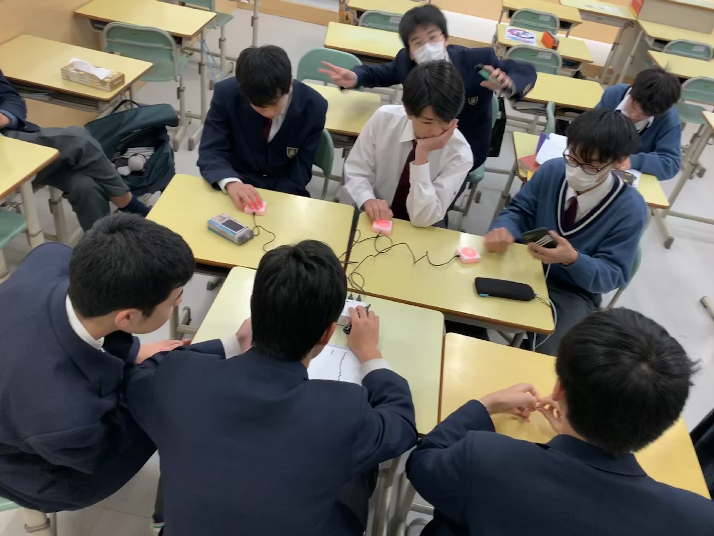
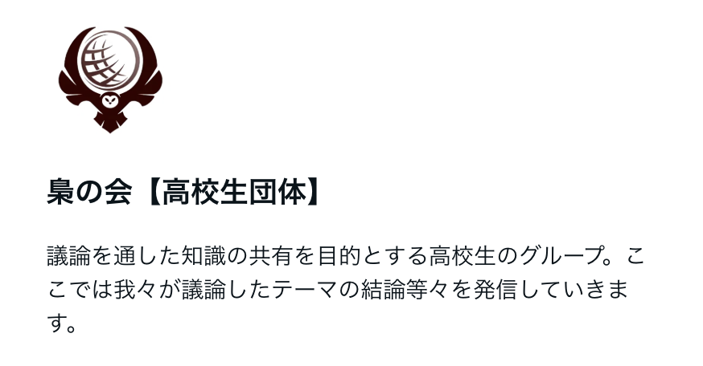
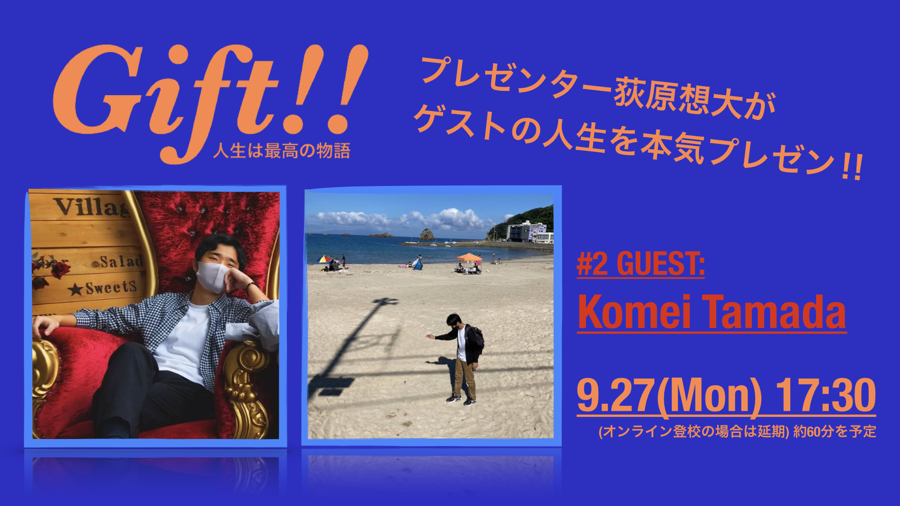
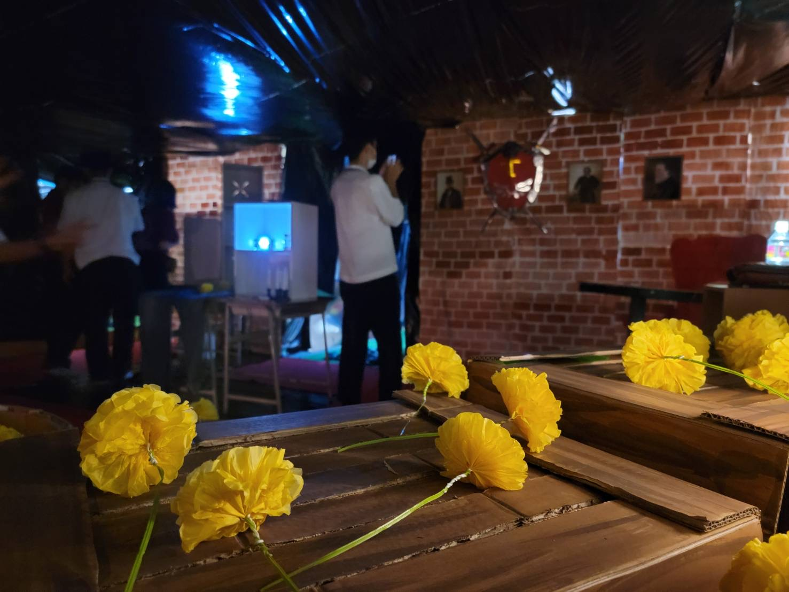

限られた人的・金銭的・時間的リソースのなかで、人を巻き込み、対話を重ね、考え抜きながら、洗練された一つのものを作り上げるために奔走する。
そんな営みは、ビジネスや地域活動、政策づくりなど、社会のあらゆる場面で見られる普遍的な構造だ。
そして、それはときに世の中を動かす原動力にもなる。
思い返せば、中学生の頃から、そういった活動に自然と関わってきた。
生徒会や部活動、自主企画などを通して、試行錯誤しながらも人と協働し、何かを実現することに面白さを感じていた。
規模は小さいながらも、当時の経験が、今の自分の行動や考え方の土台になっているように思う。
この文章では、中高時代の取り組みを振り返りながら、それらが現在の自分や社会的な活動とどのようにつながっているのかを考えてみたい。
生徒会
僕が通っていた中学校の生徒会は、比較的自由度が高く、生徒の主体性が強く求められる環境だった。私立の中高一貫校だからこそなのか、合唱発表会や球技大会、体育祭といった学校行事を、生徒が自ら企画・運営していた。
先生方のサポートはありつつも、基本的には「どうしたいか」「どうすればうまくいくか」を生徒たち自身で考え、決定していくスタイルだった。
なかでも印象に残っているのが、体育祭の運営に関わったときの経験だ。行事全体の構成や各競技の内容を決めるにあたり、僕たちは一人ずつ企画書を作成し、それを先生方の前でプレゼンテーションした。
音楽室にのプロジェクターを使い、自分の担当競技の内容や流れを図や言葉で説明し、先生たちからフィードバックをもらいながら内容をブラッシュアップしていった。
特に、ある日、先生が全ての企画書を印刷して持参し、詳細な検討のための会議が開かれたことは強く記憶に残っている。
生徒一人一人が自分の担当する競技について一人ずつ説明し、教室のテーブルの上に用具や生徒の配置を模したシミュレーションを展開。
生徒と先生とで具体的な動線やタイムスケジュールを検討しながら、全体の流れを精緻化していった。
会議が終わった後、先生に「これが会議だよ」と言われたときは、衝撃を受けた。
中学2年生から3年生にかけて経験したこのプロセスは、単なる行事準備ではなく、「一つの目標に向かって人と協力する」という"感覚"を自分の中に刻みつけてくれた。
誰かと意見を交わしながら、一つの企画を少しずつ磨き上げていく。その楽しさと難しさは、今でも僕の行動や価値観の中に生きている。
クイズ研究部

生徒会を引退したあと、自分のなかで関心が高まっていたのが「クイズ」だった。ちょうどその頃、テレビ番組などの影響で学校でもクイズが流行っており、自分でも本格的に取り組んでみたいと思うようになった。
そこで考えたのが、新しく「クイズ研究部」を立ち上げることだった。まずは当時の生徒会仲間に声をかけ、放課後に模擬活動を行ったり、部活動の設立に必要な企画書を一緒に作成したりと、実現に向けた準備を進めた。
そして、生徒会長を引退する際のスピーチでは、全校生徒の前で「クイズ研究部をつくります」と宣言した。あの場で自分の想いをはっきり言葉にできたことは、今振り返っても印象深い。
その言葉をきっかけに、「一緒にやりたい」と言ってくれる後輩が何人か現れた。活動仲間が自然と集まってきた感覚は、生徒会とはまた少し違う喜びがあった。
自分で買った早押しボタンを使って、放課後に集まり、たとえば歴史のテスト範囲をもとにしたクイズを出し合ったり、みんなに問題を持ち寄ってもらう企画を考えたり。
運営の試行錯誤も含めて、手探りながらも確かな充実感があった。
企画書をもとに、先生方や生徒会とも何度か話し合いを重ね、設立の実現に向けて動いていたが、ちょうど冬に新型コロナウイルスの影響で学校全体の活動が大きく制限され、計画は途中で頓挫することになった。
結果として部としては正式に発足できなかったものの、「仲間を集めて、自分のやりたいことを形にする」という経験は、生徒会とは異なる形でのリーダーシップのあり方や、企画をゼロから立ち上げる面白さを教えてくれた。
ディスカッションクラブ

コロナ禍によって学校への登校や部活動が大きく制限され、クイズ研究部の設立に暗雲が立ち込めていたある日、夏休み明けに友人の大西希望が「高校生のための日本の次世代リーダー塾」に参加した話をしてくれた。
彼女はそこで初めて本格的なディスカッションに触れ、とても面白かったと語っていた。
当時、僕の中でもクイズ熱は少し落ち着いており、その話を聞いて「今度は人と対話する活動をしてみたい」と思った。
そこで、放課後に数人を集めてディスカッションを始めることにした。テーマは毎回自分たちで決め、社会問題や教育、身近な話題などを取り上げて、全部で10回ほどの小さな集まりを重ねた。
今思えば、当時の自分の知識や思考力、発想力はまだまだ稚拙で、議論そのものも未熟だったと思う。しかし、自分で人を誘い、参考になる文献を調べ、考えたことを言葉にして誰かに伝えるという経験は、これまでにないほど新鮮だった。
単に答えを出すのではなく、対話を通して相手の考えを知り、自分の考えも少しずつ形にしていく。その過程自体に大きな面白さを感じていた。
ちなみに、希望に触発されて、翌年には僕自身も「リーダー塾」に参加した。そこで再びディスカッションの場に身を置いたとき、あのときの放課後の試行錯誤が、確かに自分の土台として生きていると感じた。
Gift!!

高校2年の春、僕はあるYouTube企画に強い影響を受けた。オリエンタルラジオの中田敦彦さんが企画していた「WinWinWiiin」という番組だ。
著名人を招き、その人生や価値観をプレゼン形式で掘り下げていく内容で、単なるインタビューではなく、物語として人の歩みを描いていくその手法に魅了された。
この番組を見ながら、僕はふと思った。「こうした物語は、有名人だから面白いわけではなく、どんな人にもそれぞれに語るべき人生があるのではないか」。
つまり「誰の人生も物語であり、誰の人生にも面白みがある」という気づきだった。そしてその考えを、自分なりの企画としてかたちにしたのが、「Gift!!」である。
Gift!! は、僕が周囲の友人にインタビューを行い、その人の歩みや価値観を僕の視点で再構成し、スライドとともに発表する企画だ。
第1回は、仲の良い田島光琉に放課後に4時間ほどかけてインタビューし、そこから彼の経験や価値観を整理して構成を練った。
スライドを作成し、放課後に人を集めて発表を行ったとき、彼の人生の面白さを自分自身が再確認すると同時に、聞き手の表情にも確かな反応が見えたのが印象的だった。
第2回は友人の玉田滉明に、第3回はリーダー塾で知り合った他校の友人にインタビューを行い、田島に動画編集を依頼して、YouTubeで限定公開する形式に挑戦した。
予告映像も自作し、教室の黒板にグリーンバックを貼って撮影し、編集にもこだわった。
この企画を通じて学んだのは、「誰の人生も面白い」という自身の信念を、単なる思いつきではなく、企画というかたちに落とし込み、他者と共有する力である。
今振り返っても、Gift!! はとても良い企画だったと思う。そしてあの頃以上に、多様な経験をしてきた今だからこそ、もう一度やってみたいという気持ちもある。
文化祭

高校3年間、僕は毎年文化祭の出し物を主導してきた。生徒会の活動を通じて人を巻き込み、自主的な取り組みで仲間とともに議論し、考え抜く力を養ってきた。
それらの経験は、ただの行動にとどまらず、僕の中で「物事を作り上げる」という感覚を育んでいった。
そして迎えた高校3年生。受験が迫る中でも、僕は自分の集大成として、これまでのすべての経験を最後の文化祭に注ぎ、最高の作品を作りたいという強い気持ちがあった。
これまで、何度もクラスの出し物を作り上げてきた中で学んできたこと、ディスカッションクラブや自主企画Gift!!を通じて身につけた思考や企画力、人を巻き込む力を、まさにこの文化祭にすべてぶつけるつもりだった。
1年生の時は、コロナの影響で映像作品を作る形となった。うちの高校は文化祭の出し物をSDGsに絡める必要があり、僕は当時、意識が高く、知的に見せることばかりを重視してしまった。
その結果、お堅いパワーポイントを使った発表になり、もっと楽しさや魅力を引き出せたのではないかと感じている。
2年生の時は、エヴァンゲリオンの庵野監督に影響され、映像表現にこだわりを持ち、演出にも力を入れた。内容はもちろん重要だったが、誰でも引き込まれるような演出、アートの大切さにも気づくことができた。
そして3年生の文化祭では、ようやく教室を装飾する企画が許可され、僕は「文化祭史上最高の展示をつくる」と宣言し、仲間たちと共に作品を作り上げた。
議論を重ね、みんなで協力して装飾を作り上げる過程は、まさに青春そのものだったと思う。
しかし、結果としてこだわりも想像力も計画力も思想的な成熟さも足りず、史上最高の展示どころか、大賞すら逃してしまった。
当時、僕は筑波大学の落合陽一に強く影響されていて、「わかる人だけがわかればいい」という考え方に固執しすぎてしまったというのが最も大きな反省である。
やはり賞を取るには、アート的な衝撃と、多くの人に届けるという意識が必要だったように思う。大きな後悔は残ったものの、本気で考えて奮闘したこの経験が今の自分に生きていることは間違いない。
高校最後の文化祭は、僕にとって一つの挑戦であり、また貴重な学びの場であった。
最後に
最初に述べたように、しがらみの中で人と何かを成すという営みは、社会のあらゆる場面で普遍的に行われている。
中学校や高校もその例外ではない。ただ、その舞台が学校やクラスという小さなコミュニティであり、関わる人数が数人から多くて30人程度、さらに予算も厳しく限られているというだけのことだ。
結局のところ、中学生の頃から僕たちがやってきたことは、規模や対象こそ違えど、今取り組んでいることと本質的には何も変わらない。
むしろ、あの時代に仲間と力を合わせて何かを成し遂げた喜びや、知恵を出し合って本気で考え抜いた経験こそが、今の自分の原点になっていると感じる。